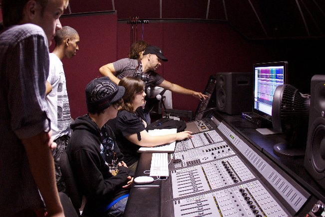
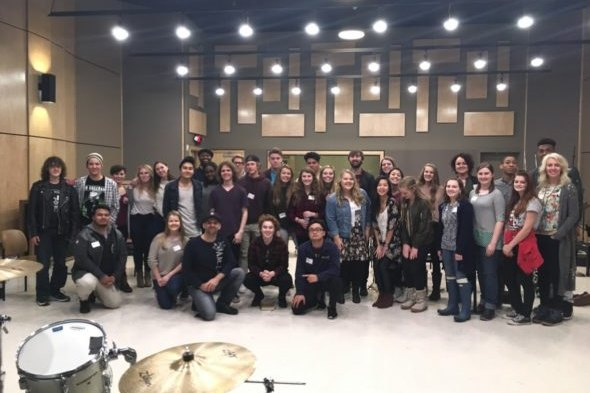
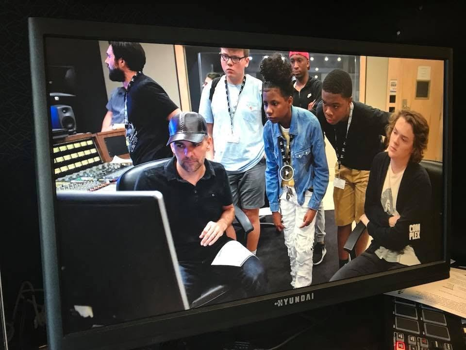
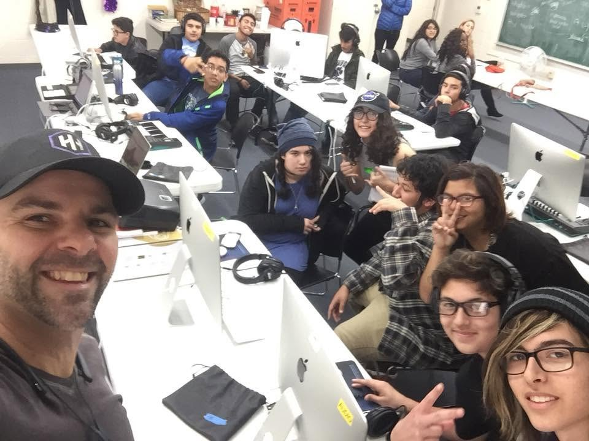
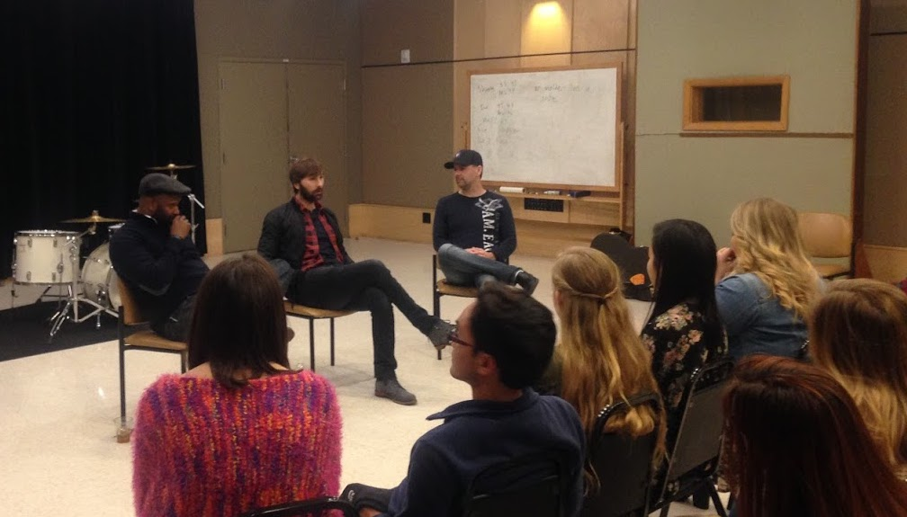
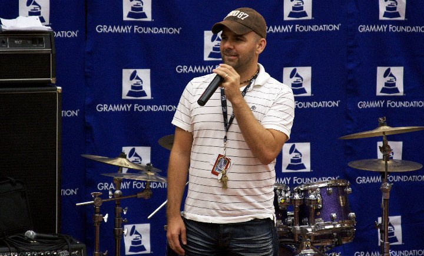
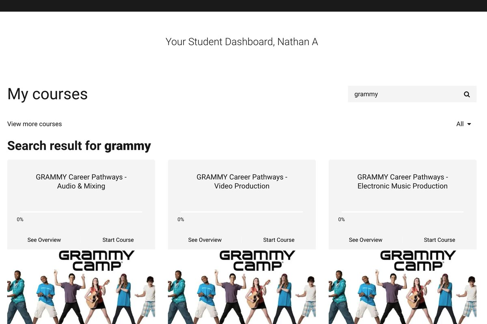
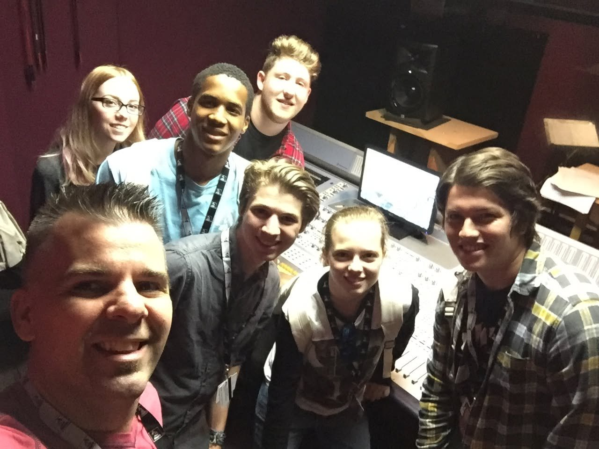
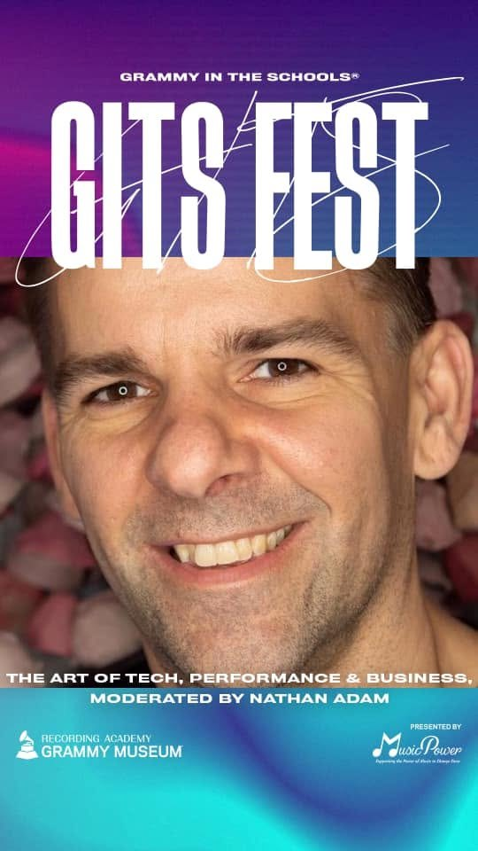

GRAMMY Camp
Seventeen years on the audio engineering faculty of the GRAMMY Museum's program for high school students, in Los Angeles, New York and Nashville, plus the two online curricula I wrote for the GRAMMY Foundation.
- 50+ camps on faculty
- 3 cities
- 17 years
- 2 curricula authored

What it is
GRAMMY Camp is the GRAMMY Museum's summer program for high school students who are serious about careers in music. Students pick a track (audio engineering, electronic music production, video production, songwriting, performance) and then spend the week doing the actual work, ending up with original music and video they made themselves.
I've taught audio engineering there since 2009. Los Angeles at USC from the start, New York at the Converse Rubber Tracks studios from 2011 to 2018, and Nashville at Belmont from 2012 to 2018, including camps at 34 Music Square East, which is the building that houses the historic Columbia Studio A and the Quonset Hut. Teenagers, in that room. I never quite got over it.
That's more than fifty camps. The number in some of my published bios is higher; this one is counted, not estimated.




Why I keep going back
The students turn up already knowing what they want, which is rare and worth protecting. So my job for the week is less about teaching signal flow than about making sure nobody quietly decides in the first hour that the technical side isn't for them. Most of what stops people is never aptitude. It's that one moment early on where the gear looks like it belongs to somebody else.
It's also the clearest test I know of whether an explanation actually works. A room of sixteen-year-olds will not politely pretend to follow you.


The curriculum
Camp reaches the students who can get to a camp. Two projects for the GRAMMY Foundation were about the ones who can't.
-

The Recording Academy Presents: GRAMMY Career PathwaysGRAMMY Foundation · 2018 · online curriculumThree tracks — audio and mixing, video production, and electronic music production — built for students who couldn't get to a camp in person. -
GRAMMY Camp: WeekendsGRAMMY Foundation · 2016 · online curriculumThe weekend format, designed to run in community spaces rather than university studios.
GRAMMY Camp Weekends, 2017
The Weekends curriculum ran in San Antonio, San Diego and Los Angeles in 2017, in partnership with Best Buy Teen Tech Centers and the Boys and Girls Club. More than eighty students across three tracks (audio engineering and electronic music production, video production, and songwriting) with video producer Hadaya Turner and performing artist Laura Donohue. Each weekend ended with ten original songs and a video the students shot and cut that day.
I also hosted the discussion panels, which put GRAMMY-winning artists and producers in a room with teenagers who had spent two days doing the same work.

When it went online
The camps moved to video for the pandemic years. Running a hands-on audio class through a laptop is not the same job, and saying so out loud eventually turned into my doctoral research: a study of how audio engineering faculty actually taught through COVID, as opposed to how everybody afterward assumed they had.


Sources
-
GRAMMY Museum · current program page
-
Belmont University News · by Hope Buckner · 11 December 2017The source for the 2017 Weekends cities, partners and student count. Archived copy